原则 A
先对齐目标，再分解任务
一级目标、二级任务、三级动作必须能向上追溯。任务不是“有人在做”，而是“在解决哪个具体目标”。
讲解稿 / Agent 创业公司运行机制
这份讲解把原始讨论记录组织为一条 Agent 软件公司运行主线：客户需求驱动产品和项目，人和 Agent 按明确合同协作，按项目选择前端、后端、自动驾驶或机器人自主作业算法，通过可测试、可部署、可追溯的任务闭环完成软件交付，并把反馈回流为下一轮能力。具体软件形态和算法路线不预设。
01 / 先统一判断标准
原始文档中关于组织、开发、测试和交付的观点，可以先收束为以下三条判断标准。后面的每一项机制都服务于它们。
一级目标、二级任务、三级动作必须能向上追溯。任务不是“有人在做”，而是“在解决哪个具体目标”。
模块测试、集成测试、回归测试和可部署性共同构成完成条件。未通过集成测试，任务仍处于进行中。
接口、脚本、目录、表格、操作手册和问题记录承担组织记忆，降低换人、并行和现场交付的损耗。
02 / 公司运转
从客户/业务问题开始，到现场使用得到反馈，再回到产品和研发决策。任何一个环节断开，都会形成“做了很多事，但不知道是否解决问题”的局面。
明确场景、约束、优先级，以及为什么现在要做。
把目标变成用户可感知的功能、预期效果与验收口径。
确定技术路线、模块职责、数据流和协作合同。
按解耦任务并行开发，用模拟依赖保持主线不断。
模块、集成、回归三类测试先在可控环境完成。
按项目选择的前端、后端、算法和运行环境交付，用脚本、手册和验收清单验证。Windows 座舱和 Linux 工控机是已知选项。
把问题、体验和完成项转化为新的目标、任务和知识资产。
03 / Agent 组织方式
公司是否 Agent 化，不取决于部署了多少模型，而取决于每个 Agent 是否进入真实结果链，并且具备可授权、可验证、可升级的工作合同。
| 工作系统 | Agent 的可承担动作 | 必须交付的输出 | 人类质量门/升级边界 |
|---|---|---|---|
| 产品 | 机会研究、需求归纳、竞品/场景分析、验收草案 | 带证据和假设的产品简报、需求与非目标 | 产品优先级、对外承诺和价值判断由负责人确认 |
| 项目 | 任务拆解、依赖跟踪、风险提示、进展汇总 | 计划表、任务合同、问题与决策记录 | 资源投入、范围变更和风险接受由项目负责人决定 |
| 研发 | 调研、方案比较、代码实现、测试辅助、文档同步 | 可审查代码/方案、测试证据、已知边界 | 架构、发布、安全和现场部署按质量门人工批准 |
| 交付 | 交付包核对、操作手册整理、现场问题结构化 | 部署清单、验收记录、反馈与下一步建议 | 客户沟通、合同、最终验收和敏感信息由负责人处理 |
04 / 部门运转
组织图不是为了划地盘，而是为了明确谁对什么结果负责、交给下游什么、需要从上游拿到什么。研发内部的小组也采用同样的接口思维。
定义问题、用户场景、优先级与验收标准。输出的是“做什么、为什么做、做到什么算好”。
将目标转成可分解方案，冻结关键接口和主链路，保证各模块可以并行而不各自为战。
实现功能并完成高仿真环境的集成验证。输出程序包、启动脚本、操作说明和已知边界。
在受控环境验证功能、集成和回归情况，向开发反馈可复现问题，并向现场交接测试结论。
组织现场资源，从使用者视角验证效果，输出现场专有问题、体验优化点和已完成项。
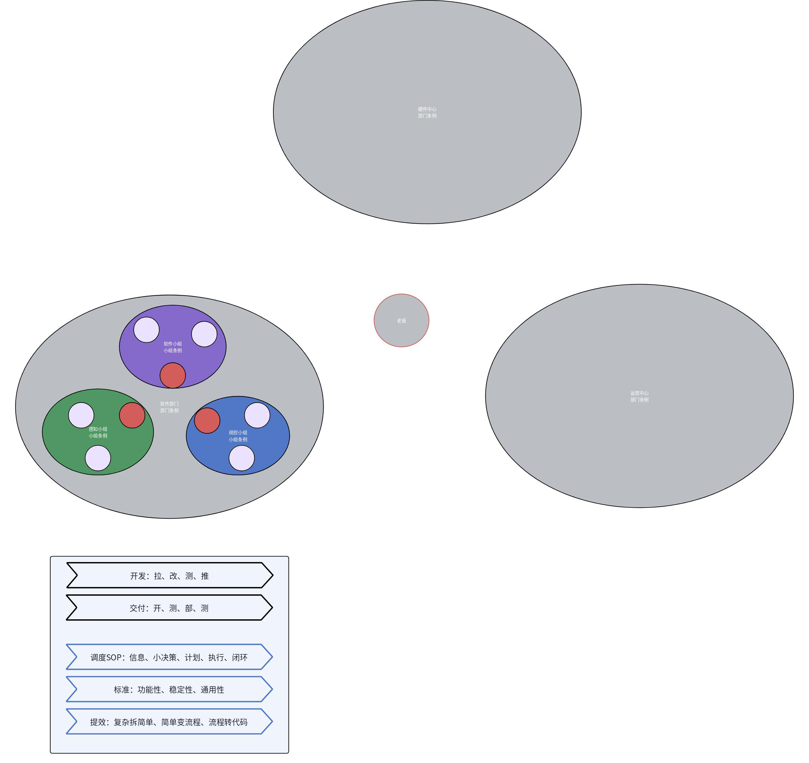
05 / 项目运转
每次交接都应留下可核对的东西。没有输入输出的协作只能靠口头记忆；一旦换人或并行，信息会快速失真。
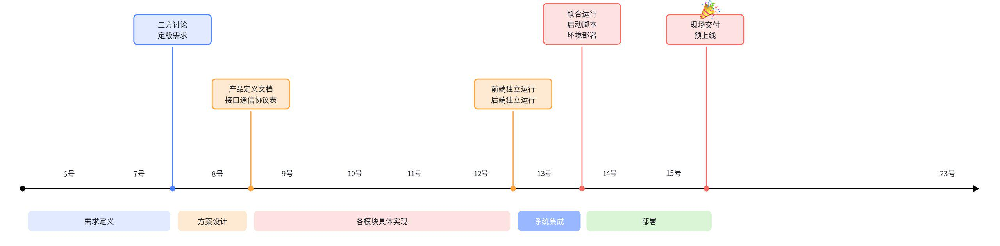
06 / 开发机制
二级任务是便于管理和验收的基本单位。三级任务由执行者细分，但不能脱离二级任务的目标、优先级和验收标准。
看项目计划表，确认目标、边界和上下游理解一致；把一级/二级任务继续拆成可执行的二级/三级动作。
优先处理高优先级项；新出现的工作先判断是否已有归属，没有就上表并确认优先级。落后强依赖任务和现场交付任务自动提高优先级。
按经过验证的技术路线实现；接口未就绪时模拟上游输出，保持可并行。遇到卡点记录“现象 - 问题 - 原因 - 方案 - 结果”，长期无解则升级讨论。
将结果部署到可代表真实工况的环境，检查模块本身、上下游联动和受影响的原有功能。目标是提前暴露隐藏问题，而不是等现场救火。
子任务结束后刷新计划表和问题表，记录关键实现和关键卡点；把现场或测试反馈转回下一个 S1。
07 / 任务生命周期
原文给出了从技术可行到甲方实际使用的五段式推进模型。它解决的不是“任务做没做”，而是“当前处于什么成熟度、下一步应该补什么”。
做可行性分析与最小测试，确认技术栈能走通。仿真可暂时脱离业务，只需搭起最小框架。
从业务拆出的一个代表性二级/三级任务入手，借真实开发继续理解技术原理和使用机制。
完成整个二级任务，各模块交互正常。先让能用的版本出来，界面、性能、稳定性等问题可留到下一阶段。
针对部署后的具体问题优化子模块，切换到用户视角提升稳定性和易用性；大问题可衍生为新任务。
在甲方真实使用中暴露问题并持续完善。内部测试通常只能到 60-90 分，不能替代现场检验。
08 / 项目推进
原文强调用“看表 - 刷表 - 解决问题 - 再看表”的节奏替代只靠口头推动。目标、优先级、进展和卡点必须在同一套可见记录中收敛。
| 机制评估维度 | 原文给出的判断方式 | 应形成的改进行动 |
|---|---|---|
| 执行 | 是否按步骤走。未执行记 0，执行记 1；不要只凭结果倒推流程存在。 | 定位是人员未执行、步骤不清，还是任务本身不适合该机制。 |
| 实用程度 | 以 60 分为分界：高于 60 分继续保留并优化，低于 60 分要说明可砍掉的理由。 | 避免把流程当成永久正确的仪式，保留有效步骤，移除无收益步骤。 |
| 优化项 | 步骤可用但不舒服、不合理时，明确要新增、删除或调整的内容。 | 把优化写入下一次机制试用，而不是停留在口头意见。 |
| 上游断层 | 当前步骤与上一步不连贯，或感觉缺了一步。 | 补齐缺失步骤，并定义它的作用、输入和输出。 |
09 / 测试与反馈
测试项与功能项应尽量镜像：功能定义明确什么，测试就证明什么。除功能正确性外，还要从用户体验和异常边界补足验证。
| 角色 | 主要责任 | 交给下游的信息 |
|---|---|---|
| 开发 | 功能开发与高仿真集成验证 | 功能项、版本包、启动脚本、操作手册、已知边界 |
| 办公室测试 | 模块/集成/回归测试，协助复现与定位 | 已通过结果、无法测试项、可复现问题与证据 |
| 现场交付 | 真实环境集成测试，使用者视角反馈与资源协调 | 现场专有问题、体验优化点、已完成项和验收结论 |
10 / 测试记录与验收
原文提出“开发 - 办公室测试 - 现场部署 - 现场测试”的分层机制。每次交接不是简单说“测过了”，而是传递可复用的测试结论和未覆盖范围。
开发接到需求时先同步功能项；开发完成后交付办公室测试。办公室完成模块、集成、回归三类验证。
向现场同步：本次新增/修改的功能项、办公室已通过的结果、办公室无法测试的功能项。条件允许时，办公室人员可先远程进入座舱补测。
现场继续完成模块、集成、回归测试。现场专有问题要记录操作前状态、步骤、现象、初步判断或视频。
办公室可复现问题回到办公室流程与开发闭环；仅现场可复现的问题让开发直接获取原始信息，避免失真传话。
11 / 部署与交付
手敲命令只适合临时救急，不应成为可持续交付方式。部署脚本、目录结构和操作手册需要共同降低现场操作复杂度。每个软件项目按自己的模块组合和运行环境定义部署合同；不必复用相同技术栈。
12 / 技术架构与工程目录
原文多次强调产品定义图、软件架构图、数据流向图和目录结构。它们的共同作用是让每个人知道模块承担什么、从哪里拿数据、向哪里交结果。
先描述“触发动作 -> 前端/接口 -> 后端/模块 -> 结果反馈”，再落到数据内容与传输方式。
软件架构应说明每一层的技术选型、组件职责、支撑关系与数据流。
部门级、组级、项目级目录逐级明确职责；工作空间和模块目录保持可预期结构。
| 架构说明项 | 必须讲清的内容 | 原文中的系统化表达 |
|---|---|---|
| 产品定义图 | 谁触发什么动作，前端如何发起，后端如何处理，最终如何反馈。 | 先让需求、接口和交互路径可见，再谈模块内部实现。 |
| 软件架构图 | 每层承担什么任务，采用什么技术/组件，层与层、组件与组件如何互相支撑。 | 将系统拆为接入、应用、领域、基础等层，避免所有逻辑堆在同一处。 |
| Web/服务职责示例 | 前端 View 负责页面和布局，前端 Controller 负责事件/API 调度，前端 Model 管理响应式缓存；后端 Controller/网关负责路由和协同，重 Model/功能单元封装复杂数据处理。 | 前后端通过实时数据、请求响应、Topic/Service 或 WebSocket 交互；轻层不吸收重业务逻辑。 |
| 数据流向图 | 每个模块都应写明作用描述、转换逻辑、传输内容和传输方式。 | 对多模块汇聚系统，数据路径比单个模块的类名更先需要被讲清。 |
| 工程目录 | 工作空间中的源码、配置、启动、构建产物、日志和接口包各自归位；模块内部也有统一的配置/启动/源码结构。 | 固定结构让新成员和 Agent 能快速找到运行入口与职责边界。 |
13 / AI 编程成熟度
原文把团队 AI 编程能力类比为智能驾驶分级。重点不是追求“无人化”标签，而是明确在每一层级中，哪些工作可以交给 Agent，哪些审核和决策仍需人负责。
| 级别 | 能力状态 | Agent 可承担的范围 | 人仍需承担的责任 |
|---|---|---|---|
| L1 | 辅助编程 | 代码补全、文档生成、简单问题解答；没有自动化流程。 | 人工编写、测试和判断所有结果。 |
| L2 | 部分自动化 | 参与需求分析、代码生成、测试辅助；部分流程自动执行。 | 人工审批全部产出。 |
| L3 | 有条件自动化 | 在完善测试闭环下完成完整功能开发，生成 Review Plan。 | 人工审查关键代码、目标和变更计划。 |
| L4 | 高度自动化 | 从需求到部署完成端到端闭环，并能领任务和修复常见故障。 | 人工做业务验收和方案抽查。 |
| L5 | 完全自动化 | 自主规划迭代路线并无人值守运行。 | 人工只做战略方向决策。 |
14 / 组织支撑机制
15 / 原始机制附录
正文已经把原文的机制重新编排；以下附录保留原始图示和系统例子，避免在整理时丢失其表达细节。涉及具体项目、人员、设备状态的历史数据仍以源 Word 为准，不应直接当作现行制度。
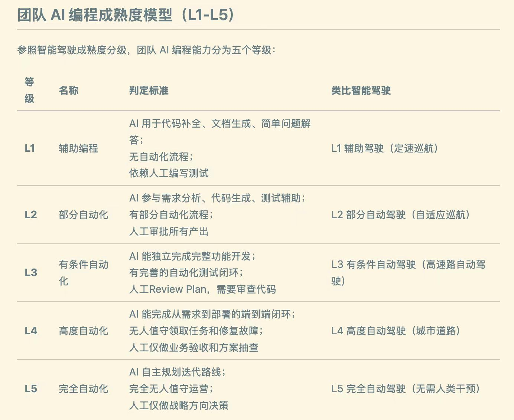
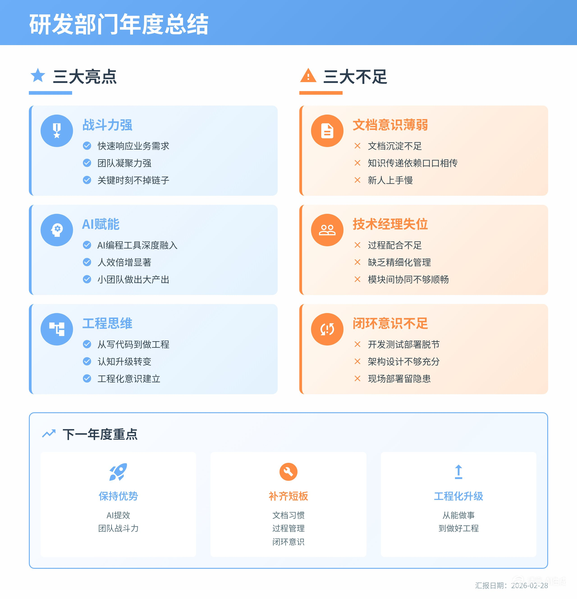
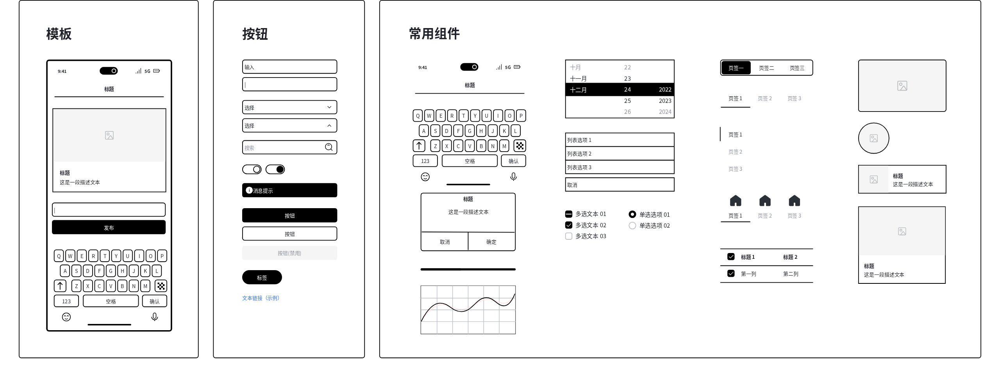
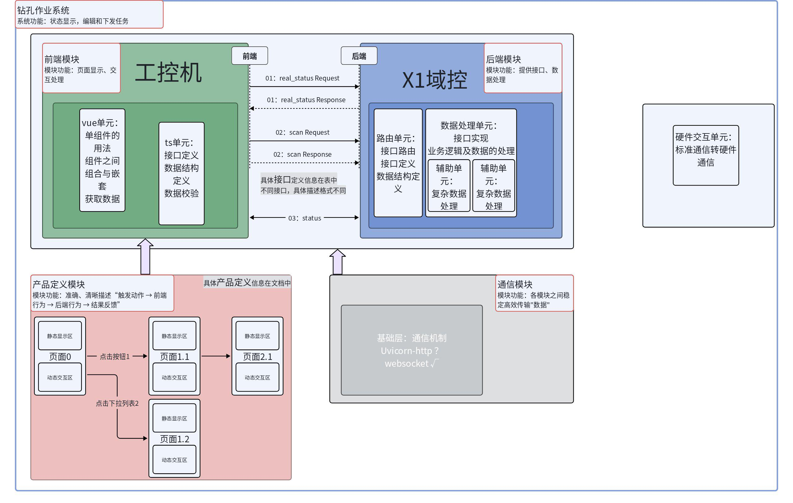
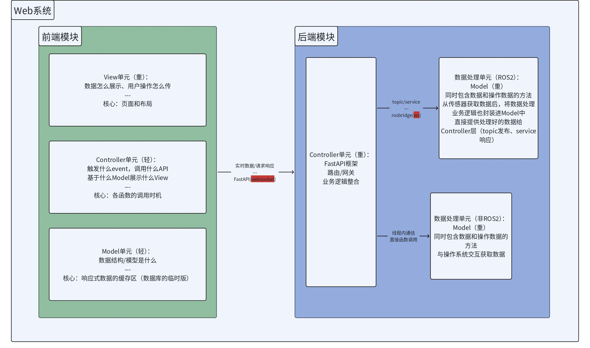
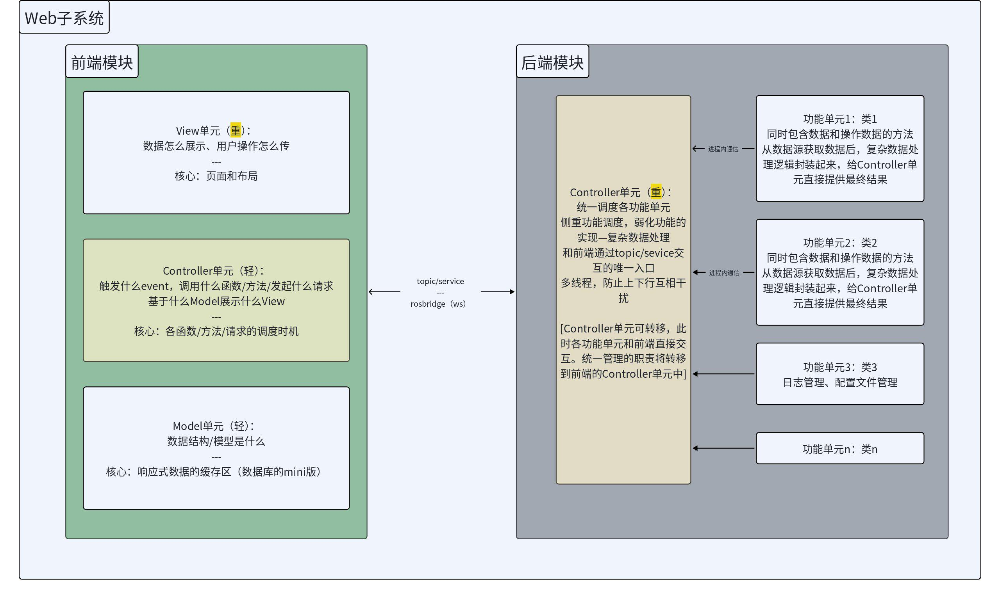
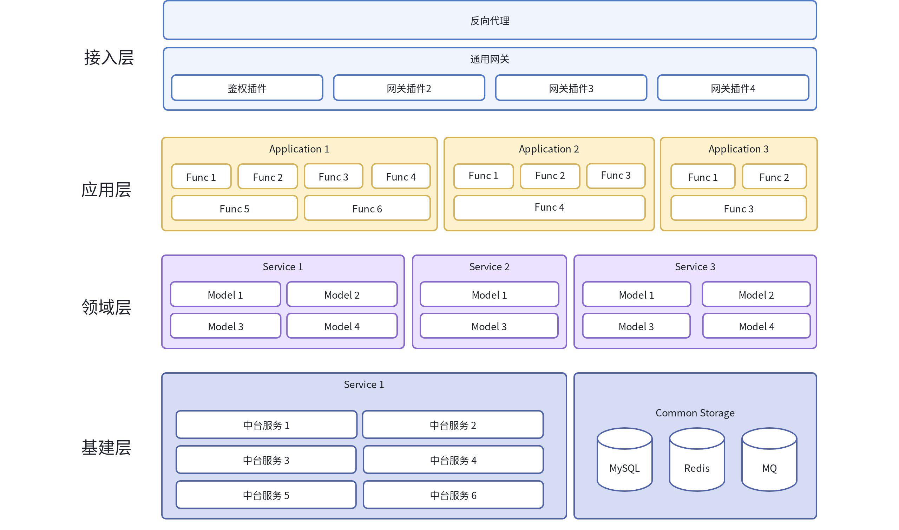
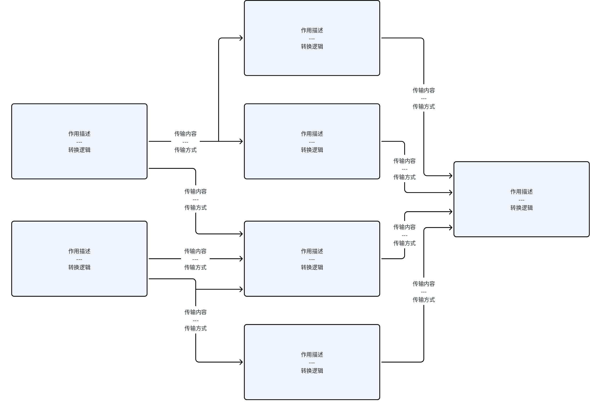
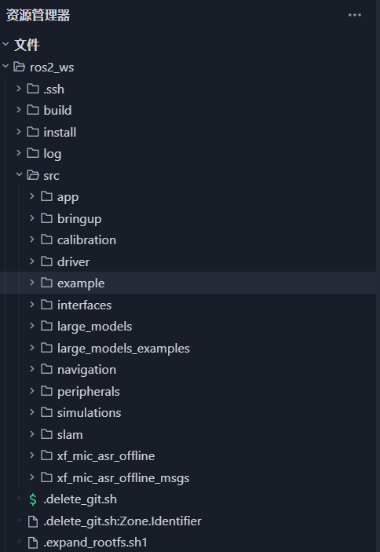
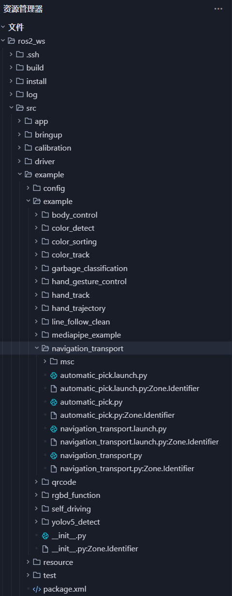
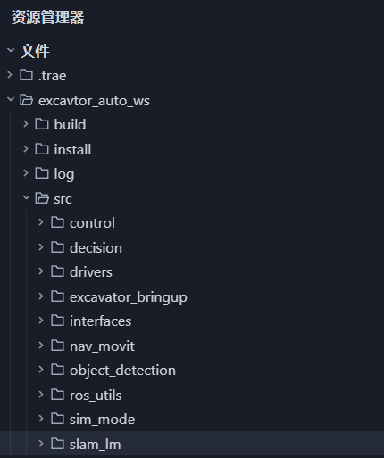
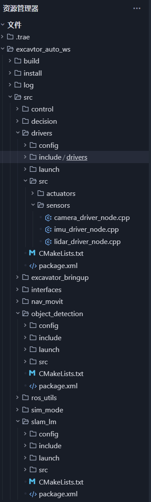
16 / 讲解收束